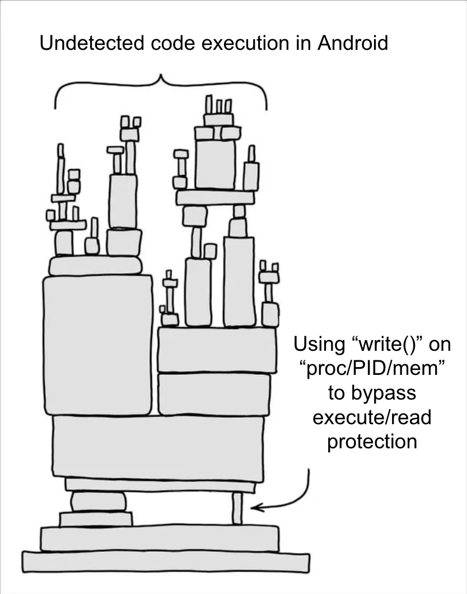

.So Long, Frida — We Inject It Raw 17/02/2026
I launch my Android app, but it instantly crashes when I attach Frida. Similar behavior is observed when a debugger is attached. Oh no, the Android APK has runtime protection, and I'm not ready to re-compile Frida from source, nor do I feel like diving down the debugger/ptrace rabbit hole.
The hole I like.
User-mode code execution! This can't be too hard, right?
Unfortunately, Android (nor any other GNU/Unix) doesn't have what Windows NT has... CreateRemoteThread.
This CreateRemoteThread API is super handy as it allows for one process to create a new thread inside another running process. That combined with another API such as ReadProcessMemory and WriteProcessMemory — which, as the name suggest, allow to read/write memory from another running process. — comes in really handy to get code execution. We don't even need "administrator" (aka root) if the target process isn't running as "administrator" itself.
Back to Android, we lack such API's, but we can build creative workarounds.
Existing methods of code execution
Most code execution is done by (side)loading a "library.so" file, and the most common method to do this is either; Using ptrace to spawn a debugger threads and get code execution in the remote process. Or to modify an ELF file on disk and add the LD_PRELOAD command.
Unfortunately, both are easily detected. A process may ptrace itself to prevent external ptrace, or it may detect the presence of ptrace one way or another as it leaves a rather big footprint behind. For the LD_PRELOAD to work, we need to re-package the APK as we modify the ELF files, which may also trigger a bunch of alarms.
Time to punch some holes
A long time ago, there was a "bug" in Linux that allowed a process to write() to any offset in /proc/PID/mem as long as open() returned a valid handle. Or in other words, write() does not respect the memory map permissions — seen in /proc/PID/maps — as it just blindly accepts the write requesting. Therefore, making it a good bypass on the read-only memory page protection.
This "bug" still needs root access, as every APK run on Android is in a sandboxed environment. So, at best, this "punch through" effect is more of an undocumented behavior.

Funny enough, this "bug" was later fixed, but caused some backlash as developers of legitimate applications using this quirk raised attention to their legit use cases, according to this archived mailing thread. I am not that active in the Linux community myself, but after some research, it seems like no one really cares; the quirk won't be fixed anytime soon, making it a fun little thing about Linux.
From Open to Write to Execute
The plan is simple, we open() on /proc/PID/mem using a rooted device so we can then call write() on a hot code path. We just need to write() a code cave that invokes dlopen() exactly once.
Spoiler alert, this exact idea of course already exists. On GitHub, user Namazso already has a project named linux_injector described as "A simple ptrace-less shared library injector for x64 Linux". However, thanks to Android not being fully POSIX-compliant, we can't just recompile it. Also, this one is for Intel x86_64, while most Android devices are using ARMv8 nowadays.
Creating the android_injector
Time to create my own ptrace-less injector for Android specifically. I will try to keep this as simple as possible and just call dlopen op my own .so file. No fancy manual mapping or anything, we can rly just copy any .so file (e.g., libstealth.so) into /data/data/<bundleId>/files/libstealth.so and then dlopen("/data/data/<bundleId>/files/libstealth.so", RTLD_NOW) to have it load and execute code.
The Codecave
Don't be scared of the machine code; it can't hurt you.
int shellcode[] = {
// Function prolog, to save registers
0xd10183ff, // SUB SP, SP, #0x60
0xa90007e0, // STP X0, X1, [SP]
0xa9010fe2, // STP X2, X3, [SP,#0x10]
0xa90217e4, // STP X4, X5, [SP,#0x20]
0xa90327e8, // STP X8, X9, [SP,#0x30]
0xa90443ef, // STP X15, X16, [SP,#0x40]
0xa9057bfd, // STP X29, X30, [SP,#0x50]
// Set x0 point to "global variable"
0xaa0003e0, // ADRP x0, ptr ; 7
0xaa0003e0, // ADD x0, x0, ptr%0x1000
// Check if ("global variable" & 0x01) and jump our epilogue if true
0xf9400001, // LDR x1, [x0]
0xf240003f, // TST x1, #1
0x54000121, // B.NE + 8? (skip next 8 instr)
0xd2800021, // mov x1, #1
0xf9000001, // STR x1, [x0]
0xaa0003e0, // *ADRP X0, lib_path@PAGE ; 14
0xaa0003e0, // *ADD X0, X0, lib_path@PAGEOFF
0xd2800041, // MOV X1, #2 ; RTLD_NOW
// call dlopen("/path/to/file.so", 2)
0xaa0003e0, // *ADRP X16, dlopen_ptr@PAGE ; 17
0xaa0003e0, // *ADD X16, X16, dlopen_ptr@PAGEOFF
0xaa0003e0, // *BLR x16 ; dlopen(str, RTLD_NOW)
// Function epilogue (restore what we overwrote)
0xa9457bfd, // LDP X29, X30, [SP, #0x50]
0xa94443ef, // LDP X15, X16, [SP, #0x40]
0xa94327e8, // LDP X8, X9, [SP, #0x30]
0xa94217e4, // LDP X4, X5, [SP, #0x20]
0xa9410fe2, // LDP X2, X3, [SP, #0x10]
0xa94007e0, // LDP X0, X1, [SP]
0x910183ff, // ADD SP, SP, #0x60
// malloc prolog (execute the overwritten instructions)
0xaa0003e0, // MOV X0, X0
0xaa0003e0, // MOV X0, X0
0xaa0003e0, // MOV X0, X0
// then finally jump back to malloc+X to restore execution
0xaa0003e0, // MOV X0, X0 ; 30
0xaa0003e0, // MOV X0, X0
0xaa0003e0, // MOV X0, X0 (BR for tailcall?)
};
This ARMv8 assembly shouldn't be too hard to understand, all it really does is set this "global variable", make sure the "global variable" doesn't have the least significant bit set (bit 1), so it can set the bit and call dl to guarantee we only load one instance of the open().so library file.
So what is the "global variable"? I had to take any writable location in the memory — executed code must respect page permissions — so I took libc's "timezone" export and temporarily used the least significant bit to store whether or not the hook has already been executed.
This is a must as the hook is inside libc's malloc function, which is executed so often that it will pretty much guarantee code execution after as little as 500ms of exposure.
Fun fact, Android uses Bionic, which is one of the reasons why Android isn't fully POSIX-compliant. This means the dlopen() is not located in libc.so but actually in libdl.so.
The hooks themselves
For those who actually paid attention to the assembly, you may have noticed that I ain't really doing assembly and just use a hardcoded int[] to store instructions. You are correct, there is no need for a full dynamic assembly as I am good with static, hardcoded instructions.
Except for 3 types of instructions. There are some MOV X0, X0 junk instructions all over the cave. They are there for a reason; they act as a placeholder. This sequence of 3 junk instructions will be replaced by a sequence of ADRP, ADD, and BR or BLR, respectively.
No joke, I think it was faster for me to write my own ADRP,ADD,BR, and BLR assembler-ish logic than to link a random bloated library into my silly project. So here they are, my DIY assembler-ish functions to calculate jump addresses for ARMv8
uint32_t assembleADRP(uint64_t targetAddr, uint64_t pc, uint32_t regIndex)
{
uint64_t pagePC = pc & ~0xFFF;
uint64_t pageTarget = targetAddr & ~0xFFF;
int64_t offset = (int64_t)pageTarget - (int64_t)pagePC;
uint32_t pageIndex = offset >> 12; // convert addr to 12bit page index
// Offset in 4KB units
int64_t imm = offset >> 12;
// Check if the offset fits in 21-bit signed value
if (imm < -0x100000 || imm > 0xFFFFF) {
return -1; // out of range for ADRP
}
uint32_t immlo = pageIndex & 0x03; // 0:1 immlo
uint32_t immhi = pageIndex >> 2; // TODO fix missing last bit?
immhi = immhi & 0x7FFFF;
uint32_t instr = 0x90000000; // OP + OpCode 1??1 0000
instr |= (regIndex & 0x1F); // 0:4 set register
instr |= immlo << 29; // 29:30
instr |= immhi << 5; // 5:23
return instr;
}
uint32_t assembleADD(uint32_t value, uint32_t regA, uint32_t regB)
{
uint32_t instr = 0;
instr |= 0x91 << 24; // 24:32 OpCode
instr |= regB << 5; // 5:8
instr |= regA; // 0:3
instr |= (value & 0xFFFF) << 10; // 10:22-ish
return instr;
}
uint32_t assembleBR(uint32_t regIndex)
{
uint32_t instr = 0xD61F0000;
instr |= regIndex << 5; // 8:5
return instr;
}
We can just ignore them, as they just set a bunch of bits in a DWORD; we can assume they work perfectly fine and start using them in our code cave like so:
// step 1.c - patch in condition (to only load once) uint64_t ptr0 = (uint64_t)syms.var; uint64_t off0 = 0x1000; off0 += ptr0 - (uint64_t)caveptr + (4*7); shellcode[7] = assembleADRP((uint64_t)syms.var, (uint64_t)caveptr + (4*7), 0); // ADRP x0, off shellcode[7+1] = assembleADD(ptr0%0x1000, 0, 0); // ADD x0, x0, off
Now we can index the shellcode[] array to update these MOV x0, x0 placeholders so that our shellcode is pointing to all the correct memory locations at runtime.
Looking at how horrible this looks, I realise this may not be the best way... but I only have like 5 different locations to patch and once that works, I never ever have to touch those things again ;D.
// malloc prolog overwritten shellcode[27] = oginstr[0]; shellcode[28] = oginstr[1]; shellcode[29] = oginstr[2];
Oh, and let's not forget to restore the instructions we overwrite when hooking into malloc, as we overwrite its first 3 instructions.
Writing Memory
Time to "holepunch" our local monstrosity into the remote target.
First, we write 3 instructions at the start of malloc so that malloc will instantly jump to our code cave.
hook_asm[0] = assembleADRP((uint64_t)caveptr, (uint64_t)caveptr2, 16); // ADRP x16, off?
hook_asm[1] = assembleADD(targetptr%0x1000, 16, 16); // ADD x16, x16, off
hook_asm[2] = assembleBR(16);
if(mem_write(caveptr2, &hook_asm, sizeof(hook_asm)) == 0)
{
LOG("Failed writing malloc hook!");
return -EACCES;
}
Next, we figure out where to inject the code cave. We cannot allocate a memory page into the remote target, so we gotta find a sneaky little place — one with the execute flag set — to write our payload into.
void* caveptr = (syms.p_dlopen-(((uint64_t)syms.p_dlopen)%0x1000)) + (0x1000 - sizeof(shellcode));
We have to be creative once more as I decide to write this small enough payload at the end of the .text section of the libc.so. — It can actually be any other library in whatever .text section or other executable section. — We take this location as "page alignment" is a thing, leaving us with a big gap of unused executable 00 bytes, where we can write our small enough shellcode into.
Pulling out
With the writes done, we can have code execution any time now. Although I want to be sure it is actually executed, I want to wait a little and get a verification of whether the thing was actually executed or not.
while(mem_read(syms.var, &new_var, sizeof(new_var)) != 0 && loop_count <= timeout_count)
{
loop_count++;
LOG("READING GOT: new: %x (old: %x)", new_var, old_var);
int is_injected = new_var & 1;
if(!is_injected)
{
usleep(50000);
continue;
}
LOG("HOOK malloc executed!");
break;
}
The above snippet will keep reading the target process memory to see if the "global variable" has its least significant bit set, and if true, it will break the loop and (not visible in snippet) restore the malloc hook and erase the codecave to leave no traces behind.
This works fine, as the most likely thing to write the "global variable" in the next second will be our shellcode malloc hook whenever malloc is executed by the target.
Full source
For those brave enough, the whole source code is available on github.com/ferib/android_injector[https://github.com/ferib/android_injector/blob/master/src/main.c#L481]
Time to run!
Before we do so, we must quickly compile a libtest.so so we can actually verify the .so was injected and executed in the target process.
Creating LibTest.so
First, we create LibTest.c
#include <android/log.h>
__attribute__((constructor))
void init_callback() {
__android_log_print(ANDROID_LOG_ERROR, "LIBSTEALTH", "#### LIBTEST HAS LOADED ####");
// NOTE: you may want to pthread another function; we must NOT stall the malloc thread!
//pthread_t thread;
//pthread_create(&thread, NULL, (void*)init_launch, NULL);
}
The trick here is to create a dynamic library with the __attribute__((constructor)) so that the compiler puts the ptr of init_callback into the .init_array of the ELF file. This is a must as we call dlopen on the file, the ELF Loader will execute these .init_array pointers and give us what we want... code execution 🤩
Compiling LibTest.so
This is trivial thanks to ndk-build. I used to have nightmares trying to cross-compile, especially when the target architectures differ.
The full GitHub repo can also be found at github.com/ferib/libtest.so, containing all the stuff needed to configure ndk-build.
Injecting LibTest.so
This is the moment we've been waiting for! Before we proceed, we must place the libTest.so on the device in the expected location or the libTest.so may not even load due to the Android sandboxing. Let's copy the file to /data/data/com.example.test/files/libTest.so and run the android_injector
Then off to the races!
> /data/tmp/android_inject.sh 1185 "/data/data/com.example.test/files/libTest.so"
Injecting into 1185
--------- beginning of main
08-15 05:59:23.782 1335 1335 I LIBSTEALTH: #====================================#
08-15 05:59:23.782 1335 1335 I LIBSTEALTH: #----- START android_injector ------ # [1804289383]
08-15 05:59:23.782 1335 1335 I LIBSTEALTH: #====================================#
08-15 05:59:23.782 1335 1335 I LIBSTEALTH: android_inject on 1185 with "/data/data/com.example.test/files/libTest.so"
08-15 05:59:28.256 1335 1335 I LIBSTEALTH: found match for dlopen: 0x7c962e3014
08-15 05:59:28.256 1335 1335 I LIBSTEALTH: Found dlopen: 0x7c962e3014
08-15 05:59:28.256 1335 1335 I LIBSTEALTH: FOUND THE libdl.so at 0x7c962e2000 in '7c962e2000-7c962e3000 r--p 00000000 07:e8 39 /apex/com.android.runtime/lib64/bionic/libdl.so
08-15 05:59:28.256 1335 1335 I LIBSTEALTH: '
08-15 05:59:28.306 1335 1335 I LIBSTEALTH: found match for timezone: 0x7ca552c128
08-15 05:59:28.307 1335 1335 I LIBSTEALTH: found match for malloc: 0x7ca54a200c
08-15 05:59:28.307 1335 1335 I LIBSTEALTH: found match for sprintf: 0x7ca5514cf8
08-15 05:59:28.307 1335 1335 I LIBSTEALTH: syms.p_sprintf = 0x7ca5514cf8
08-15 05:59:28.307 1335 1335 I LIBSTEALTH: FOUND THE libc++.so at 0x7ca5464000 in '7ca5464000-7ca54a1000 r--p 00000000 07:e8 38 /apex/com.android.runtime/lib64/bionic/libc.so
08-15 05:59:28.307 1335 1335 I LIBSTEALTH: '
08-15 05:59:28.346 1335 1335 I LIBSTEALTH: libc: 0x7ca5464000, libdl: 0x7c962e2000
08-15 05:59:28.346 1335 1335 I LIBSTEALTH: Found libc base at 0x7ca5464000
08-15 05:59:28.346 1335 1335 I LIBSTEALTH: write str ptr at 0x7c962e3f48 size 49 ("/data/data/com.example.test/files/libTest.so")
08-15 05:59:28.346 1335 1335 I LIBSTEALTH: dlopen ADRP at 0x7c962e3fc0
08-15 05:59:28.346 1335 1335 I LIBSTEALTH: Shellcode injected at 0x7c962e3f7c, waiting for trigger...
08-15 05:59:28.346 1335 1335 I LIBSTEALTH: caveptr2 0x7ca54a200c
08-15 05:59:28.346 1335 1335 I LIBSTEALTH: offset: f0e41f70
08-15 05:59:28.346 1335 1335 I LIBSTEALTH: HOOK: malloc (test) injected at 0x7ca54a200c
08-15 05:59:28.346 1335 1335 I LIBSTEALTH: READING GOT: new: 1110000 (old: fffff1f0)
08-15 05:59:28.350 1185 1469 E LIBSTEALTH: #### LIBTEST HAS LOADED ####
08-15 05:59:28.351 1185 1860 E LIBSTEALTH: WHO WANTS TO DRINK FROM THE FIREHOSE????
08-15 05:59:28.364 1185 1860 E LIBSTEALTH: 0x646ed25947a8dd83 OR 0x794fc40000
08-15 05:59:28.364 1185 1860 E LIBSTEALTH: Hooking send 0x7ca54c3ae0 7ca54c3ae0 to 77d25dbd40
08-15 05:59:28.364 1185 1860 E LIBSTEALTH: sendto 7ca54b5538
08-15 05:59:28.364 1185 1860 E LIBSTEALTH: connect 7ca54b54e4
08-15 05:59:28.364 1185 1860 E LIBSTEALTH: HOOK test_A at 0x795050a800 -> 0x77d25dc5e0
08-15 05:59:28.364 1185 1860 E LIBSTEALTH: HOOK status 0
08-15 05:59:28.396 1335 1335 I LIBSTEALTH: READING GOT: new: 1 (old: fffff1f0)
08-15 05:59:28.396 1335 1335 I LIBSTEALTH: HOOK malloc executed!
08-15 05:59:28.396 1335 1335 I LIBSTEALTH: Removing hook and codecave!1!!
That's a lot of prints, yet none of them are useful. Should clean those up, but they actually come in handy when stuff breaks.
Anyway, we injected into pid 1185, as we can see the command on the first line. We can see the pid of the injector is 1335 by looking at this line 1335 1335 I LIBSTEALTH: android_inject on 1185 with "/data/data/com.example.test/files/libTest.so".
Now we can confirm our libTest.so was executed inside the remote process as process 1185, our target, emitted our test string in this line 1185 1469 E LIBSTEALTH: #### LIBTEST HAS LOADED ####.
Ta da 🎉
There it is, libTest.so got injected, and my target did not crash! But does this really mean it's undetected? Just because no one is looking doesn't mean it's fully undetected.
Re-evaluating its footprint
First, the most obvious requirement is that we need access to the target process memory. I choose to do so with root access and open() on /proc/PID/mem, but if I'm not mistaken, we can also take a different route with virtual memory spaces.
Second, we actually do leave a footprint somewhere inside the libc.so as we hook the malloc. The malloc has its first 3 instructions overwritten, and then libc.so has the code cave injected somewhere at the end of the .text section. Both are only exposed for a brief second, depending on how much time it takes for malloc to execute. One syscall later and all the traces left behind are gone... unless there may be a dirty bit left behind 🤔
After the injection is done, all memory is restored, all fd's are closed, but two things remain. The /data/data/<bundleId>/files/ still contain the libTest.so, which isn't hard to remove. There is also a copy that exists in memory, which is heavily exposed in the /proc/PID/maps.
Conclusion
We looked into how we can inject dynamic executables into a remote Android process while keeping a very low footprint. We did this using a lesser-known techniques that avoid the usage of ptrace so we can get code execution inside self-protected Android processes.
Despite leaving a small footprint behind during the injection process, we concluded that our libTest.so library is left naked in memory and can easily be spotted in the /proc/PID/maps. However, deciding which .so is side-loaded and which one came from the process itself seems like a difficult detection techniques, one which I have yet to see in a public protected Android application ;).